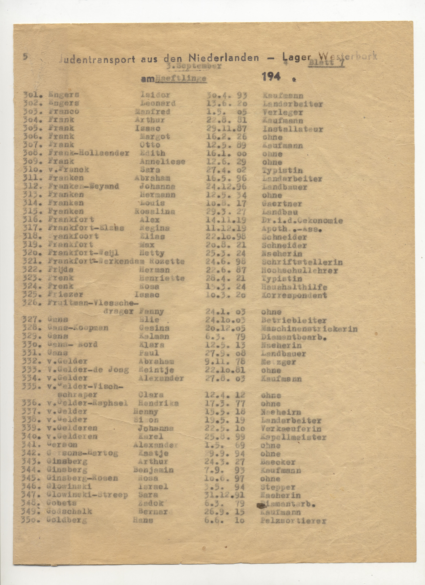

A1 beginnt
Das rot-karierte Heft wird zum ersten erhaltenen Tagebuchband.
Die Überlieferung der Geschichte von Anne Frank – erzählt aus den Quellen selbst: als persönliches Selbstzeugnis und als Verwaltungsdokument eines Verfolgungssystems.
Eine Quelle mit mehreren Fassungen. Nicht nur, was Anne schrieb, sondern auch wie ihre Texte bewahrt, bearbeitet und veröffentlicht wurden, prägt ihre historische Überlieferung.
Am 12. Juni 1942 erhielt Anne Frank zu ihrem 13. Geburtstag ein rot-karierte Tagebuch.
Erhalten sind drei ursprüngliche Tagebuchhefte: A1 vom 12. Juni bis 5. Dezember 1942, A2 vom 22. Dezember 1943 bis 17. April 1944 und A3 vom 17. April bis 1. August 1944.
1944 schrieb Anne frühere Einträge auf losen Blättern neu. Diese B-Version ordnet Texte um, kürzt und formuliert um; ihre letzte erhaltene Eintragung datiert vom 29. März 1944. Die ursprüngliche Fassung ist daher nicht vollständig erhalten.
Nach der Verhaftung am 4. August 1944 fanden Miep Gies und Bep Voskuijl die Aufzeichnungen am folgenden Tag. Miep bewahrte sie in einer Schublade auf und übergab sie Otto Frank, nachdem er am 18. Juli 1945 vom Tod seiner Töchter erfahren hatte. Otto Frank stellte aus verschiedenen Textfassungen die erste Buchausgabe zusammen; das veröffentlichte Buch ist keine unveränderte Abschrift.
Das rot-karierte Heft wird zum ersten erhaltenen Tagebuchband.
Anne überarbeitet frühere Einträge auf losen Blättern.
Die erste niederländische Ausgabe erscheint bei Contact.
Die Manuskripte werden in das UNESCO-Register aufgenommen.
Ein Verwaltungsdokument vom 3. September 1944. Es erfasst Menschen mit laufenden Nummern – und macht dadurch die bürokratische Perspektive der Deportation sichtbar.

Die Liste stammt aus dem Verwaltungszusammenhang des Durchgangslagers Westerbork. Auf Blatt 7 sind vier Mitglieder der Familie Frank verzeichnet:
Archiv: Nationaal Archief, Archiv des Niederländischen Roten Kreuzes, Sammlung Westerbork, 2.19.296, Inventarnummer 433, Blatt 7.
Der Transport umfasste mehr als 1.000 Menschen und erreichte Auschwitz-Birkenau in der Nacht zum 5. September 1944.
Die konkrete Abbildung darf in dieser Oberfläche nicht verändert oder nachgezeichnet werden. Die rote Markierung ist eine separate Orientierungsebene und kann ausgeblendet werden.
Die Sammlung ist heute im Nationalarchiv überliefert und wurde nach dem Krieg vom Informationsbüro des Niederländischen Roten Kreuzes unter anderem zur Suche nach Vermissten genutzt. Für dieses konkrete Blatt ist jedoch nicht jede einzelne Station zwischen 1944 und der archivischen Aufbewahrung dokumentiert. Eine lückenlose Geschichte – etwa eine geheime Vergrabung und Bergung – wird deshalb nicht behauptet.
Beide Dokumente ergänzen sich. Keine der beiden Quellen kann allein die gesamte Geschichte der Familie Frank erzählen.
Das Tagebuch bewahrt Stimme und Wahrnehmung. Die Liste erfasst Personen als Bestandteile eines organisierten Transports. Ihre Formen sind verschieden; gerade deshalb lassen sich die Perspektiven aufeinander beziehen, ohne sie zu vermischen.
Quellenkritik fragt bei beiden: Wer schrieb? Für wen? Mit welchem Zweck? Was ist erhalten – und wo bleiben Lücken?
Öffentliche Erinnerung entsteht nicht aus einer einzigen, lückenlosen Linie. Sie entsteht durch Aufbewahrung, Prüfung, Edition und den transparenten Umgang mit Unsicherheit.